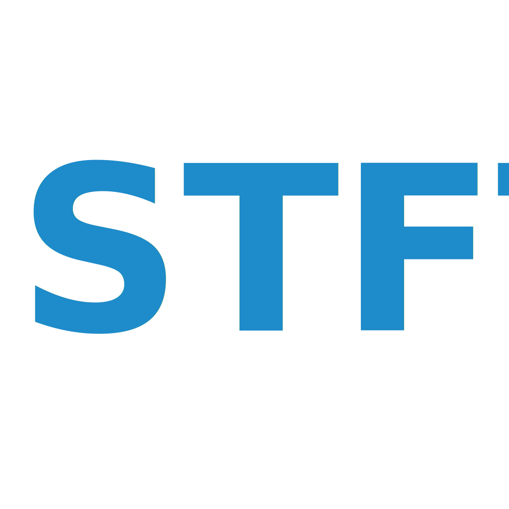

1. Introduction
PyNanoLab is a user interface (GUI) software built using the PySide6 framework integrated with Python’s scientific computing ecosystem. It aims to provide a cross-platform, modern, and user-friendly interface for data analysis and visualization. Starting as an analysis tool for nanopore ion current signals, PyNanoLab has evolved into a comprehensive software for scientific data analysis.
Main features:
Cross-platform support: PyNanoLab can run on multiple operating systems, including Windows, Mac, and Linux.
Modern interface: It employs modern user interface elements and interactive methods to offer an enhanced user experience.
Data managemen: PyNanoLab provides unified data management capabilities, supporting common data formats. Imported data, analysis results, and generated charts can be saved within a unified project file for future reference and reproducibility.
Data Analysis: The software includes built-in data analysis tools, such as data visualization, statistical analysis, and more, empowering users to explore and analyze experimental data effectively.
Extensible Toolbox: PyNanoLab offers various data analysis toolboxes and the ability to add extensions and plugins to meet specific analytical requirements.
2. Installation
Please refer to the online tutorial:：https://decacent.github.io/html/install
2.1 System Requirements
In order to install and run the PyNanoLab software on your computer, your system needs to meet the following minimum requirements
Operating System: Any 64-bit Windows, macOS, and Linux distribution with a GUI interface.
RAM: At least 8GB RAM is recommended.
PyNanoLab does not have much requirements for the performance of the system, but it consumes a lot of memory and CPU resources when processing large amounts of data, especially visualizing data at high sample rates.
PyNanoLab uses a number of scientific computing libraries and GUI libraries, so it may conflict with the modules of the current system python or have compatibility issues, so it is recommended to install it in a separate virtual environment. First of all, you should already have a Python or Conda virtual environment installed in your system, it is recommended to use Miniconda, and add Conda to the system environment variables. On Windows, you also need to install a terminal program. Git-Windows or Windows Terminal is recommended.
2.2 Software Installation
First, create an virtual environment for PyNanoLab and execute the following command in terminal:
1
2
3
4conda create -n pnl python=3.11.3
source activate
conda activate pnl # activate the pnl environment.
conda install numpy
In the above command, we used conda to create a Python virtual environment called pnl, where the Python version is specified as 3.11.3. Then activate the pnl environment and use Conda to install the MKL version of numpy in this environment.
- Then, use the pip to install pynanolab and the dependencies directly.
1
pip install --upgrade pynanolab # install or upgrade
So, PyNanoLab is installed in the pnl virtual environment, and the software can be opened by executing the command pynanolab directly in the terminal where pnl is activated (it may take a little longer to open it for the first time). You can also use commands pnl-shortcut to create desktop shortcuts for the software.
3. Basic operations
3.1 Interface navigation

PyNanoLab’s interface consists of a menu bar, toolbar, project manager, and MDI manager.
3.1.1 Project Manager
The Project Manager in PyNanoLab serves as a comprehensive tool for managing all files and objects within the software. It comprises a tree browser and an item browser, offering efficient organization and navigation capabilities.
PyNanoLab’s project files are structured as dictionaries, adopting a folder-based approach. Each project can create multiple folders, and within each folder, three subfolders are included: Data, Table, and Figure.
- Data Folder: Manages sampling data in the form of multi-channel and multi-sets, currently supports Axon .abf files, LabVIEW .tdms files, and LightField .spe spectral files.
- Table Folder: Manage all generated and externally imported table files, including text files (.txt), . .csv. .xlsx. mat、. npy files, etc.
- Figure Folder: Manage all drawing objects.
When a subfolder of the tree browser is selected, the list browser will show all items stored in that folder, and the corresponding window can be opened by double-clicking the entry.
By employing this folder structure, PyNanoLab’s Project Manager streamlines file management, ensuring a coherent and organized workflow for users.
3.1.2 MDI manager
PyNanoLab incorporates a Multi-Document Manager that displays all open windows within the software, allowing users to work with multiple datasets simultaneously. Each window corresponds to a specific dataset and facilitates data manipulation and processing. The button 、 and can be used to organize the windows.
Additionally, the right-click menu of the items list view provides common administrative commands for managing the datasets. These commands typically include importing new files, exporting data, and deleting files from the software.
In PyNanoLab, the widgets for the Data Folder and the Table Folder serve as views of the underlying data. When you close these windows, it does not delete any data. You can open and close these windows as needed without affecting the data itself.
On the other hand, the widget in the Figure Folder contains the actual figure data. When you close the graphics window associated with a figure, it will delete the corresponding drawing. This behavior allows for efficient management of figures and helps keep the workspace organized. If you no longer need a specific figure, closing its window will remove it from the software and free up system resources.
By providing separate handling for data views and figure widgets, PyNanoLab offers flexibility in managing and visualizing data while ensuring that the workspace remains tidy and clutter-free.
3.2 Management of project files
PyNanoLab has built a dedicated file format for storing the entire project’s content, enabling data reloading and graph redraw. The *.pnl format is the project file format used by PyNanoLab, which essentially is a ZIP-compressed archive. Within the compressed archive, data is organized in folder structures that correspond to the main folders in the tree browser. Each main folder is also stored as a ZIP file with the *.pnlfd extension.
For subfolders, the Data folder and Figure folder are stored as HDF5 files using PyTables, allowing for efficient storage of large-scale sampled data. The file extensions for these subfolders are .pnldat and .pnlfigz, respectively. The Table folder utilizes the HDFStore interface provided by Pandas to store data as HDF5 files, and its file extension is *.pnltbz.
The aforementioned files can be extracted individually from the compressed archive and imported into PyNanoLab. The software also supports exporting each subfolder independently.
By utilizing this file structure, PyNanoLab ensures efficient storage and organization of project data. The ability to reload data and redraw graphs enables seamless project management and enhances the flexibility of data analysis within the software.
1 | # 一个PyNanoLab项目文件的基本结构 |
Although PyNanoLab project files do not have a specific storage limit, it is not recommended to store a large amount of data within a single project file, especially when it involves a significant volume of raw data. Storing excessive data in a single project file can increase the storage size, opening time, and the probability of encountering errors. It is advised to keep the size of individual project files below 4GB to avoid potential issues in certain file systems.
In the event of encountering errors while opening a project file, an alternative approach is to use file decompression software such as 7z to extract the files within the *.pnl file. The extracted files can then be individually imported into the software or accessed and exported using custom programming methods.
4. Data
PyNanoLab organizes imported data into different folders based on their data types for processing. The Data folder primarily handles various non-tabular structured data. You can import data files by using the Import button in the toolbar or by directly dragging and dropping files onto the tree browser.
After importing a data file, double-clicking on its entry will create a view window for the data. In PyNanoLab, visualization of sampling data is achieved using the Pyqtgraph framework, which enables high-speed data display.
4.1 Processing of sampling data

In PyNanoLab, the file I/O interface automatically reads essential information such as sampling rate, filtering, units, and names from the files. For electrophysiological data such as ABF files, they are processed using the SampleDataWidget, as shown in the figure above. The main features of the SampleDataWidget include:
Data browser
In the left sidebar tree browser, all sweeps of the data file and the channels under each sweep are listed. By selecting the corresponding channel with the mouse, the data of that channel will be displayed in the plot area.data view
The data display area utilizes the line plot functionality of Pyqtgraph. The plot area supports 3-point mouse operations, enabling users to interact with the graph. By right-clicking and dragging on the graph, users can zoom in and pan the view. Additionally, two vertical cursors are added to the plot area to assist in selecting data points within the graph.Toolbar1
: Reset. The window retains a backup of the original data. Clicking this button will reset the data to its initial state.
: Calculate and plot the power spectral density of data within a cursor interval.
: Export the data in the cursor interval to the table.
 : Export the data in the cursor interval to a.mat file in MATLAB.
: Export the data in the cursor interval to a.mat file in MATLAB. : Remove any trends from the data.
: Remove any trends from the data.After clicking this button, a trendline will appear in the graph, and you can adjust the slope of the trendline by adjusting the anchor points at both ends. Double-clicking on the trendline allows you to add new anchor points. Once you have made the desired adjustments, click the confirmation button to finalize the changes.
: Data flip, take the opposite number of data.
: Calculate and plot the Histogram of the data within the cursor interval.
: Deleting the data in the cursor interval can be used to remove the abnormal interval in the data.
: Merge data from multiple sweeps into one sweeps.
 : Place the cursor to the largest position and select all data.
: Place the cursor to the largest position and select all data. : Place all cursors within the visible area.
: Place all cursors within the visible area.: Place cursor 1 in the viewable area.
 : Place cursor 2 in the viewable area.
: Place cursor 2 in the viewable area.: Automatically scale graphics.
Toolbar2
- : Nanopore analysis
In version 3.0, we recommend using the nanopore toolbox for nanopore signal processing. For details, please refer to the section7.1。
: Denoise

This tool contains several algorithms for data noise reduction. As shown in the figure, select the algorithm to be used in method and set the corresponding parameters below.between curose only data between cursors is processed，Full Trace processe all data。After setting, you can click to preview the effect, and then click to apply to the original data. : Filter
: Filter

Includes butter and bessl type low-pass, high-pass, band-pass and band-stop filters. Use scipy.signal.bessel and scipy.signal.butter。: Baseline Fit

Used for baseline correction of data, obtaining the baseline of data or removing the baseline to smooth the data. Using pybaselines。segmentation indicates whether the data is divided. The sampled data usually has a large amount of data, and directly searching for the baseline of all signals will occupy a large amount of memory or cause the system to crash. Here, we can group the data for calculation, and the value set to 0 indicates that no grouping is performed. For parameter Settings of each algorithm, refer to pybaselines: Eval

Using expressions to eval data, support numexpr，You can select all supported operations and functions from the drop-down list. local var lists the variables that represent the data, Operator lists the supported operations, and Functions lists the symbols for all supported functions. For example, input:sin(IN0+100), which means +100 for the data of the first channel and assign the value to the current preview channel after calculating the sine value. : time-frequency spectrum，An algorithm for calculating time spectrum, please refer to 10.1038/s41467-020-20539-9。
: time-frequency spectrum，An algorithm for calculating time spectrum, please refer to 10.1038/s41467-020-20539-9。 : Nanopore Toolbox，By clicking this button, the data between the cursors will be transferred to the nanopore toolbox for further processing.
: Nanopore Toolbox，By clicking this button, the data between the cursors will be transferred to the nanopore toolbox for further processing.
4.2 Processing of spectral data
to be continued …
5. Table
PyNanoLab has built a table tool similar to Excel and OriginLab. It uses pandas for data management and calculations, and QTableView for data display and interaction. You can directly import external data into the Table folder using the Import button. For text files, we have created a data import wizard to assist with data loading. In addition, PyNanoLab also supports importing numpy’s npy, npz, and MATLAB files.
The table tool in PyNanoLab supports multiple worksheets, where each worksheet consists of a data table and a corresponding information table (similar to OriginLab). The information table primarily records data attributes such as “Name,” “Unit,” and “Type” signals.
Each Table includes a log file that can automatically or manually record information about the file. The log supports Markdown formatting and can be accessed from the top right corner of the table window.
This feature allows you to maintain organized and structured data management within PyNanoLab’s table tool, with separate tables for data and associated metadata. The log file provides a convenient way to track and document any relevant information or changes made to the table.
The table window in PyNanoLab keeps a record of the last 10 steps performed, allowing you to undo up to 10 actions. This feature provides flexibility in reverting changes or correcting mistakes within your data analysis workflow. It’s important to note that when you close the table window, the history of actions will be cleared, resulting in the loss of the data’s history. However, closing the window does not delete the data itself.
While the history record feature enhances usability, it’s essential to strike a balance as having too many history records can consume system resources. Therefore, it’s advisable to manage the number of recorded steps based on your specific requirements and available system resources.
PyNanoLab’s table tool offers a straightforward and intuitive user experience for most operations. Here, let me introduce a few notable features:
Data Export

Right-click in the list browser to find the file export entry, or select the check box to select multiple files to export at the same timeSet plot Label

In the context of data visualization, it’s important to specify the labels for the X and Y axes of your data. In PyNanoLab’s table tool, you can easily set the plot labels for columns by following these steps:- In the information table, select the column(s) for which you want to set the plot labels.
- Right-click on the selected column(s).
- From the context menu, choose “Set plot label as“.
- Select the desired symbol or representation for the plot label.
- The plot labels will be displayed on the corresponding column header(s). By setting the plot labels, you can ensure that your data is appropriately labeled and easily identifiable during the visualization process.
Set Data Types
The same operation is used to change the data type of each column of data.Data query

PyNanoLab offers powerful and convenient filtering capabilities, supporting the expression formats of both numexpr and pandas. The filtering results can be directly generated in a new table. Taking the example given in the previous context, let’s consider the expression A>15 and B>0.2. Here, “A” and “B” are unique identifiers for each column of data, and you can perform multiple boolean operations for filtering simultaneously.
By leveraging the filtering capabilities of PyNanoLab, you can easily extract and analyze data based on specific criteria, facilitating efficient data exploration and analysis.
EXAMPLES:
1
2
3A > 15 and (B > 0.2 or B < 0)
sin(A)>0.5
A+B>12 and (B < 0)
Find and replace

Find and replace numbers and strings that meet the conditions, and support regular expressions pandas.Series.replaceAs shown in the figure above: Replace the numbers greater than 15 in columns A and B with 10.
Copy
In PyNanoLab, to enhance performance, the table data is displayed in pages. As a result, directly selecting and copying all the data in the table will only capture a maximum of 1000 rows. Therefore, if you need to copy the entire table’s data to software like Excel or other applications, you should use the copy button available in the toolbar. This button allows you to copy all the data from the selected columns.Split
For string data types only, a column of data is divided into multiple columns based on matching symbols, similar to Excel’s column function.Eval

PyNanoLab supports direct computation of table data using expressions, similar to the formula functionality in Excel. The software provides two methods for computation: one is to input the expression in the calculation dialog box, and the other is to input the expression directly in the Func cell in the table header.Calculation dialog box:
Click the calculation button in the toolbar to open the calculation dialog box.
In the calculation dialog box, enter the expression you want to apply to the selected cell or column.For example,
H=A+sin(B), where the result of the calculation is assigned to the column namedH.Directly inputting expression in the “Func” cell:
Select the “Func” cell in the table header of the desired column. By default, the result will be assigned to the current column.
concatenating and merging
PyNanoLab supports merging and concatenating workbooks within a single sheet. You can merge workbooks from different tables by using drag-and-drop with the mouse.
Workbook concatenation is performed using
pandas.concatfunction, which combines two tables along a specified axis. This is mainly used to add new rows or columns to the data.Workbook merging is performed using
pandas.mergefunction, which updates the data in an old table with a new table, similar to database updating.For detailed information and examples, please refer to the Pandas userguide. Choose the appropriate operation based on your specific requirements.
6. Visualization
PyNanoLab has built a comprehensive plotting tool using the matplotlib library. Combined with the table tool built with pandas, it enables GUI interactive plotting with the matplotlib library. You can set, save, and reload various parameters of the plot using the GUI interface without writing any code. Currently, PyNanoLab supports data visualization of various types of plots, including line plots, scatter plots, bar plots, histogram plots, and contour plots.
With PyNanoLab’s plotting tool, you can easily visualize your data and customize the plot settings without the need for manual coding. It provides a user-friendly interface for interactive plotting and offers a range of plot types to suit your data analysis needs.
matplotlib’s drawing is divided into three levels:
Figure：
A Figure represents the drawing area on a canvas. It serves as the top-level container for all the elements in a plot. A Figure is typically created usingplt.Figure().Axes:
An Axes represents a coordinate system on a Figure. Multiple Axes can coexist on a single canvas. Each Axes consists of x and y axes, along with corresponding ticks, tick labels, and axis labels. PyNanoLab uses the same type of coordinate system for all 2D plots, allowing control over the properties of all axes.Artist：
An Artist represents the specific objects drawn on the coordinate system, such as curves, scatter plots, etc. By using different Artists, various types of data plots can be created.
PyNanoLab reorganizes the drawing objects of matplotlib and provides independent GUI parameter settings tools for each type of Artist, enabling interactive plotting without the need for complex coding processes.
To create plots in PyNanoLab, you simply need to set the corresponding plot labels for the data columns in the table, and then select the appropriate plot type button for the selected data.

As shown in the above image, PyNanoLab’s plot window consists of a toolbar, an object browser, and a plotting area. The object browser lists the structure of all elements in the plot. Each plot can have multiple axes, and each axis can contain multiple plot objects (artists).
Merge of figure
PyNanoLab supports dragging and dropping plot objects from one axis to another. This allows for merging of plot elements between different axes and figures.
Customed axes grid
In addition, PyNanoLab allows for custom plotting methods, where you can create complex coordinate system layouts and then place pre-drawn plot objects into their respective axes. This enables the construction of intricate and sophisticated visualizations.Clicking on the Custom Plot option under the plotting menu will open a wizard dialog.
Step 1: Set the size of the figure and the axes grid. The axes grid helps in dividing the figure into a grid, making it easier to place the coordinate systems. A coordinate system can occupy multiple grid cells, so this method can be used to set the proportional size of the coordinate systems.

Step 2: After setting up the grid in the first step, a corresponding table is generated. To create a coordinate system, select the cell(s) where you want to create the coordinate system and click the Add Axes button. This will mark the selected area as a coordinate system.

Step 3: Set the corresponding type for each coordinate system, default is 2D map.

Step 4: Preview the created coordinate system and go back to the previous step to reset it if it does not meet the requirements.

Finally, we drag the Artist drawn in the other drawings to the corresponding coordinate system to generate a complex graph
The whole process is shown as follows:

For more graphic drawing methods, please refer to 用PyNanoLab进行数据可视化
7. Toolbox
7.1 Nanopore Toolbox

The Nanopore Toolbox is primarily used for the extraction and analysis of nanopore signals. Its main interface consists of a toolbar, a signal list, a plotting area, and a result table. The raw data for the Nanopore Toolbox can be directly imported from the Data widget on the main interface, where the data within the cursor range can be imported and stored as an independent *.pnlmd file. This file stores all the raw data and analysis results in the internal storage structure of PyTables’ HDF5 file format, allowing for easy re-importation into the Toolbox for further analysis. The standalone Nanopore Toolbox enables more complex signal analysis and batch processing, while also facilitating the integration of new features. Its main functionalities include:
 Import Model: Import the stored *.pnlmd file.
Import Model: Import the stored *.pnlmd file. Save Modle: Save to *.pnlmd file.
Save Modle: Save to *.pnlmd file.Export data: Export data to a file or the Table widget of PyNanoLab. Contains two functions: one is to export the signal analysis results to the file or the main interface; One is to export raw data.

Export Raw data You can export the original data and fitted signals to one or multiple files for subsequent analysis using customized scripts and software.
 Plot raw data: Visualize the original data. It is necessary to display the original data and set the parameters for signal analysis.
Plot raw data: Visualize the original data. It is necessary to display the original data and set the parameters for signal analysis.Plot fit data: Drawing the original data and the fitting result together can easily check the analysis quality of the signal.
Autoscale
Signal extract：Entrance for automatic signal analysis of nanopore.

As shown in the figure above, the preprocessing part is to preprocess the data for noise reduction in signal analysis. Before automated analysis. Some parameters need to be set manually to help the program find and analyze the signal, as explained below:Model: Select the signal analysis method. For the results of each method, refer to the following result graph.
Baseline: Set the baseline of the signal, that is, the opening current. You can select the baseline by dragging the line in drawing.
Threhold: Set a signal threshold. Signals greater than or less than this value are analyzed.
Direction: “Whether the signal is above or below the baseline. Tips: In nanopore analysis, we usually use the terms “blockade” or “enhancement” to describe the behavior of a signal. Here we use the term “Direction” because in a negative voltage blockade signal, the numerical value of the signal (e.g., -100) is greater than the numerical value of the baseline (e.g., -200). Therefore, using the terms “blockade” and “enhancement” in numerical-based signal analysis can lead to confusion. In future versions, we will remove this option and automatically determine the signal direction based on the set baseline and threshold.
fluctuation: The value of signal noise. It is an important parameter in finding the signal within the threshold range. It is set as the upper and lower fluctuation range of the baseline noise, or more precisely, the average difference between the upper extreme point and the lower extreme point of the baseline.
fluctuation2: Same as the above parameters. Used in multi-step analysis, this value is used when finding multiple steps inside the signal to avoid errors caused by excessive noise difference between the baseline and the signal. Setting this to 0 means using fluctuation.
ignore time less：In multi-step analysis, steps whose duration is less than this value are ignored.
ClusterNum： In the multistepsKmeans method, set the maximum number of steps expected by the signal.
Kernel Size：kernels of Kmeans method.
Sigma：The parameter used by the extremejump algorithm, which only needs this one parameter to find the signal in the fluctuation of the baseline noise in excess of this multiple, without requiring baseline leveling.
BaseLineNum：Parameter of the faradayStep algorithm: indicates how many data points are used to calculate the baseline.
StopNum：Parameter of the faradayStep algorithm: indicates how many data points are used to determine the end of the signal.
StopDiff：Parameter of the faradayStep algorithm: indicates the error to determine the end of the signal.

Among the above algorithms, singleStepOriginal, singleStepReduced, singleStepAdept2 are used for single-step signal processing. multistepspnl, multiStepkmeans，IDMS are used for multi-steps signal processing.
singleStepAdept2 and singleStepAdept2 algorithm is derived from MOSAIC， and we use a better way to implement the algorithm. All other algorithms are independently developed by PyNanoLab.
In the IDMS method, a single signal needs to be processed in multiple steps. The cutignal algorithm is used to segment the signal in advance.
Signal preview
In the nanopore toolbox, there are two preview methods for the analyzed signal. One is to click fitplot in the toolbar to draw the fitting signal and preview all the results of the analysis globally. In addition, individual signals can be previewed one by one by clicking on the signal list.Signal Modify
In the nanopore toolbox, you can manually modify the analyzed signals after the initial analysis. By clicking View mode button below the plotting area, you can switch between the preview mode and the editing mode. In the editing mode, when you click on each signal, the plot will display lines representing the steps of the signal. You can drag each line to modify the analysis results in real-time. Additionally, you can click Reset to delete analysis results and use the manual mode for analysis.Manual analysis of signals
By double-clicking on the data points in the graph, you can mark the start and end positions of the signal steps. After marking the positions, you can click the Confirm button to recalculate the results.
Manual addition of signals：Manually adding signals to the signal list. This is used to handle signals with high noise fluctuations and uneven baselines, where automatic signal extraction is not possible.

Reset signal：Reset all signals to unanalyzed state.
 del signal：Delete all signals from the signal list.
del signal：Delete all signals from the signal list. Info Fig：Automatically generate a statistical plot of the nanopore results.
Info Fig：Automatically generate a statistical plot of the nanopore results.Batch calculates the PSD for each signal
 Batch calculates the STFT for each signal
- Batch calculates the time-frequency spectrum for each signal，using superlets algorithm